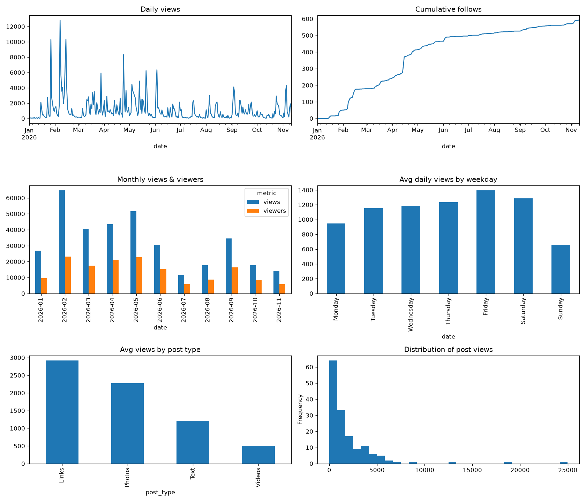

Overview
Page performance

Explore
Project resources
Exploratory analysis
Notebook used to explore views, followers, content, and audience performance.
Open notebook →Data preparation
Notebook used to clean and combine the Facebook exports.
Open notebook →Daily performance
Cleaned daily views, viewers, visits, follows, interactions, and click data.
Download CSV →Post performance
Cleaned post-level engagement, views, reach, and publishing details.
Download CSV →Audience profile
Age-and-gender audience percentages derived from Facebook Insights.
Download CSV →